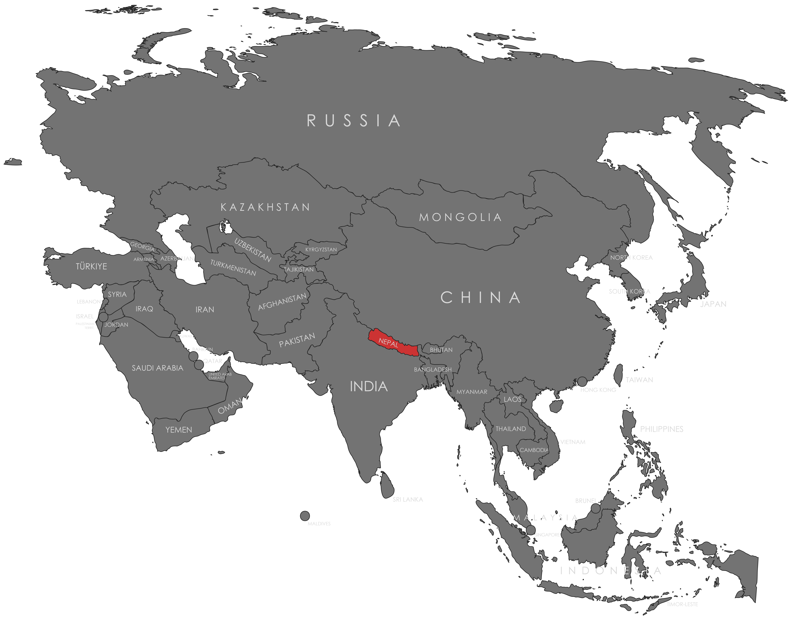

Specifications
- Local Name: नेपाल (Nepāl)
- Proportion: Non-rectangular (unique double-pennon)
- Name of the Flag: राष्ट्रिय झण्डा (Rāṣṭriya Jhāṇḍā – National Flag)
- Adopted: December 16, 1962
Symbolism
- Crimson red: Bravery and the nation’s vibrant spirit
- Blue border: Peace and harmony
- Two stacked triangles: Represent the Himalayas and Nepal’s Hindu-Buddhist heritage
- White crescent moon and sun: Royalty, serenity, and hope for longevity of the nation
Colors:
Shapes / Symbols:
Meaning / Special Display
- The flag is hoisted during national events, religious festivals, and international ceremonies, symbolizing Nepal’s sovereignty and unique identity.
Description
- The flag reflects Nepal’s rich cultural heritage, geographical uniqueness, and enduring national pride.
- For its citizens, it embodies unity, resilience, and devotion to the nation despite its non-rectangular form.

Return to Gallery